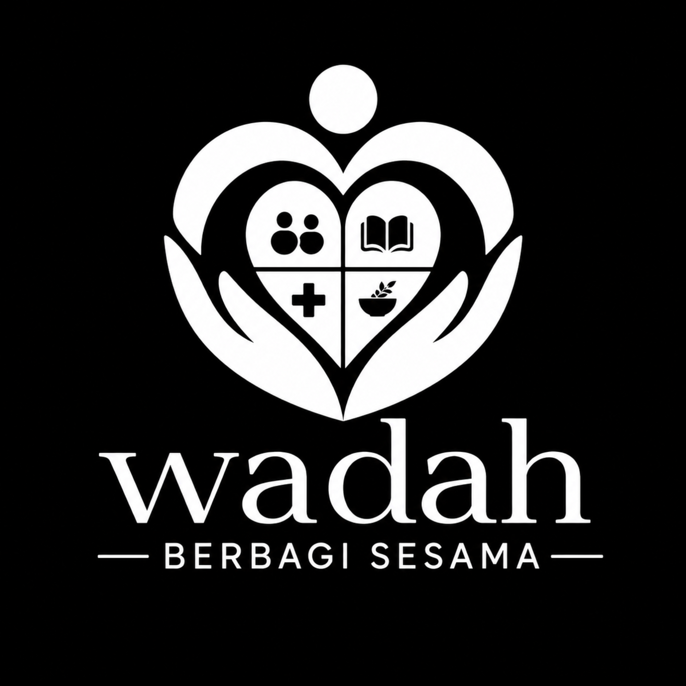

Kepala Pengurus Harian
Memimpin koordinasi operasional, pengembangan program, administrasi, dan inisiatif digitalisasi organisasi.
PROJECT 03 / SOCIAL IMPACT & ORGANIZATIONAL DEVELOPMENT
Organisasi sosial yang berfokus pada kegiatan kemanusiaan, pendidikan, dan pemberdayaan masyarakat.

Memimpin koordinasi operasional, pengembangan program, administrasi, dan inisiatif digitalisasi organisasi.
Organizational management, program development, operational planning, dan community engagement.
Mendukung organisasi agar memiliki proses kerja, dokumentasi, dan koordinasi yang lebih tertata.
Informasi kontribusi disajikan secara umum dan tidak memuat data internal organisasi.